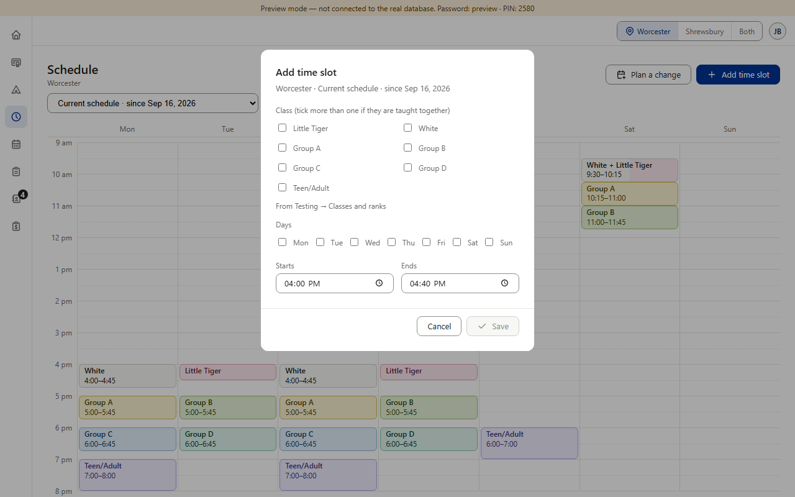
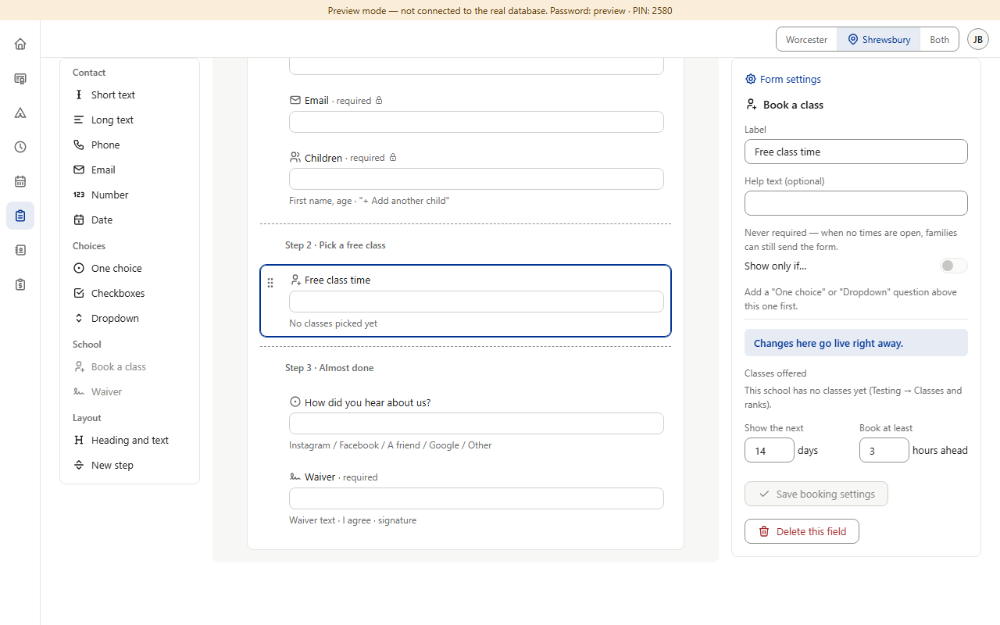
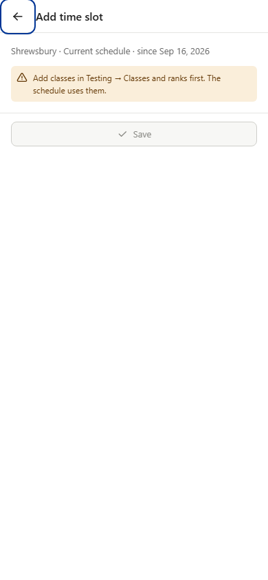
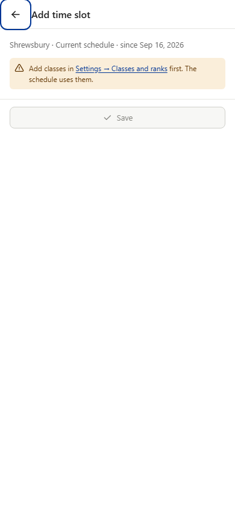
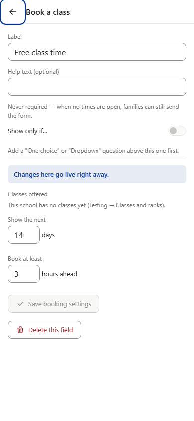
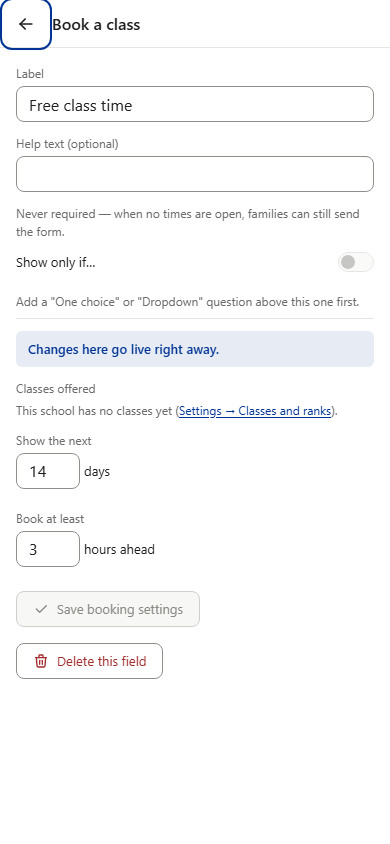
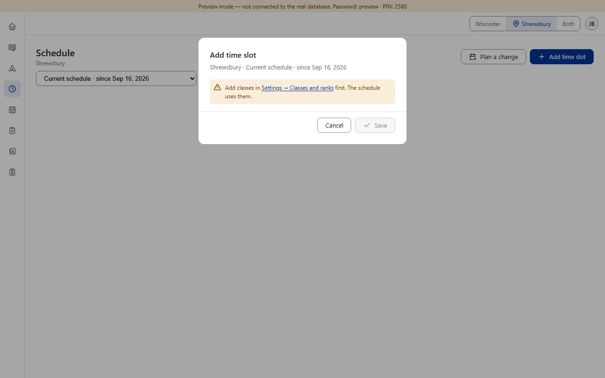
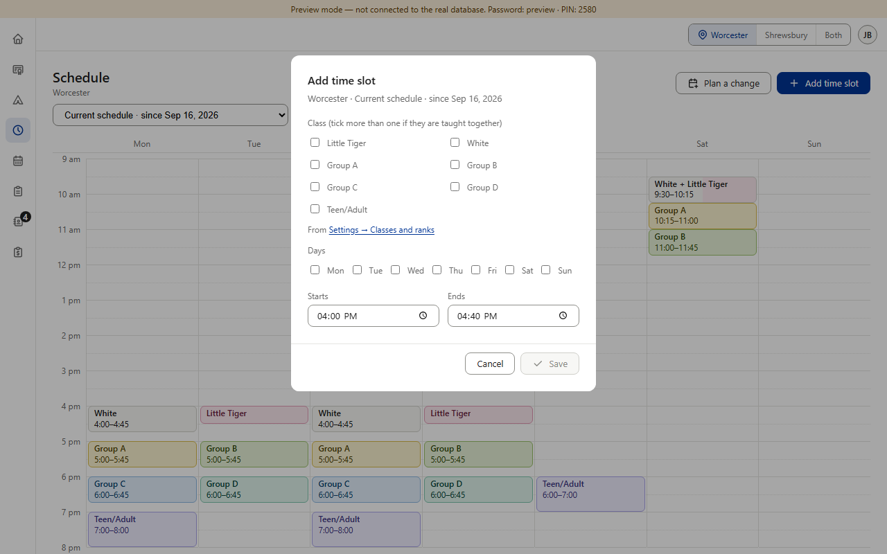
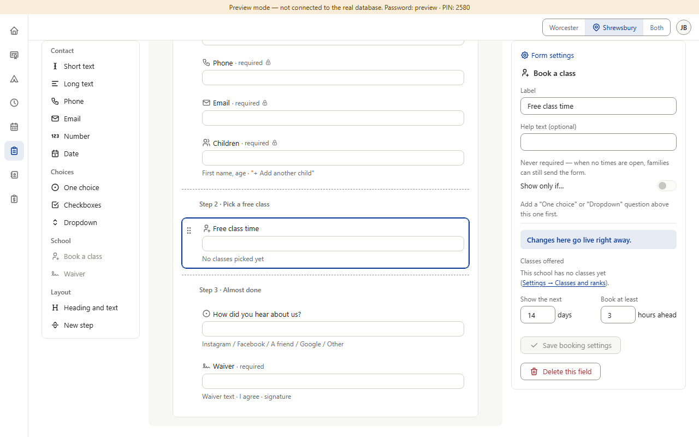
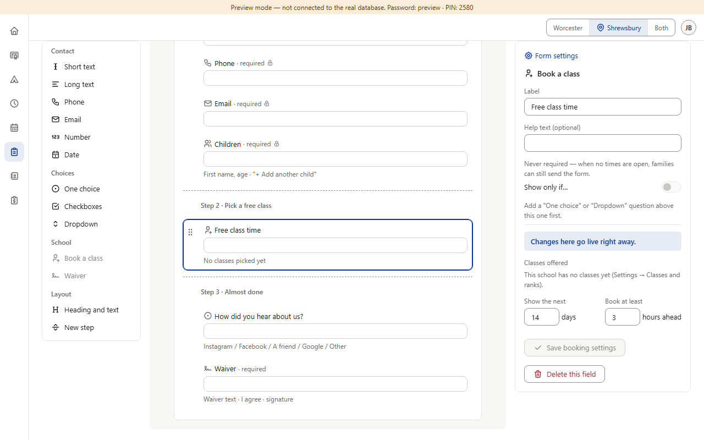

Question 1 answered: B — Settings stays admins only; staff read Color Belt’s Prices tab (view only). This sheet is Question 2 of 4. (Preview screenshots, fake data; Shrewsbury’s classes cleared in the preview to show the “no classes yet” lines. The options are drawn on top of the real pages; nothing in the app is built yet.)






Three hints point at the class list. After the move they must say Settings → Classes and ranks either way. The question is only whether they also open it. Only admins see them (Add / Edit time slot and the form builder are admins only; staff’s Schedule is view only), so there is no staff version to draw. A link needs Settings → Classes and ranks to have its own address (#settings/classes-and-ranks, opening Settings scrolled to that part). The link look is the app’s existing inline link — as Black Belt’s “Go to the default rubric” in its gray line; no other section links between sections today. The hint files are the New students session’s (N11): Color Belt gives the address, they change the words.



One tap to the class list from anywhere it’s mentioned. − Hint 2 sits beside choices the admin may already have ticked: a tap there leaves the dialog (the unsaved-changes guard would have to stop it), for a line that is only saying where the list comes from.

The least change; no address needed. − An admin stuck on “no classes yet” must find Settings themselves (account menu → Admin → Settings — not on the side panel).
Recommended. The two “no classes yet” lines are dead ends — nothing can be done on that screen until classes exist, and Settings is tucked in the account menu — so a link there saves the hunt, with nothing typed to lose. The line under the Class choices is only information, next to choices being made, so it stays plain text.
Answer Question 2 (A, B or C).